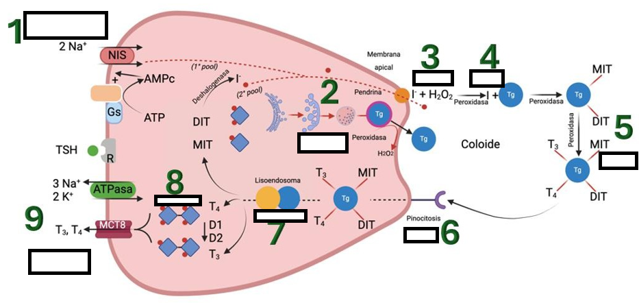

Necesitas tener habilitado Javascript para poder continuar
Observa la imagen, lee las preguntas y arrastra cada proceso a la posición correcta en la secuencia de síntesis de hormonas tiroideas. Si colocas un proceso en un lugar incorrecto, recibirás retroalimentación específica.

❮
❯
Revisar
Siguiente intento
×